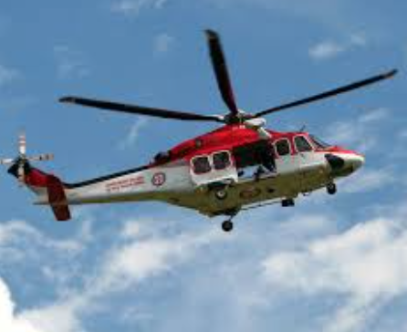

How To Get Found
No matter how good of a time you are having and no matter how prepared you are to survive in the wild, you'll want to work on getting found. If you've been in any kind of accident, you'll need to be checked up on by professionals at a hospital. You'll want to let friends and family know that you are safe. There are a couple things you can do to make getting found easier.
Phone or Radio
This should be a no-brainer. If you have a phone or a radio...USE IT! See if you can triangulate your transmissions and repeat your message in threes (i.e. "MAYDAY, MAYDAY, MAYDAY"). Triangulation and groups of three messages are universally understood as distress signals. Your transmission can also include details about who you are, where you are, how many people are with you, and any injuries or medical attention needed. This way, anyone coming to the rescue can come prepared.
Signals
Many times you won't have a working phone or a radio to send out a transmission of any kind. You can also signal passing aircraft from the ground. Luckily, people know where you were going for your hike and know roughly where to look for you when you didn't come back when you said you would be back...right? At least I hope you did that...That is the smart thing to do.
Signal passing aircraft with large unnatural formations of branches, rocks, or other materials that will stand out to an aerial observer. You can form words like HELP or SOS to make your meaning completely unambiguous. If you have a flare gun, fire it off when you see an aircraft. You can use fire at night and during the day because the light will attract attention at night and the smoke will attract attention during the day.